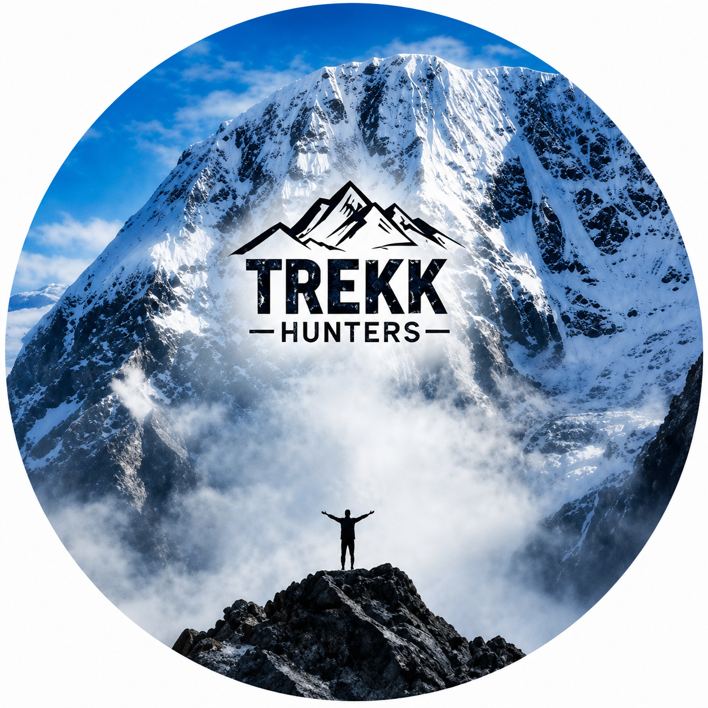
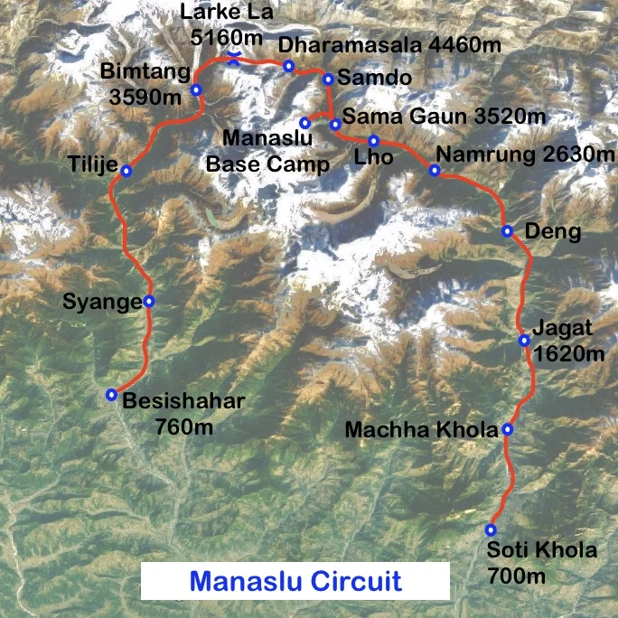

Trek HuntersA Remote Himalayan Adventure Around Mt. Manaslu
Manaslu Circuit Trek is one of Nepal’s most beautiful and adventurous trekking routes. The trail circles around Mt. Manaslu, the eighth highest mountain in the world. This trek offers peaceful villages, suspension bridges, forests, rivers, Buddhist culture, snowy mountains, and high mountain passes.
It is less crowded than Annapurna and Everest routes, making it perfect for trekkers who want a peaceful and authentic trekking experience.
Tea houses and lodges are available throughout the route. Most hotels provide simple rooms, warm blankets, charging facilities, and local food options.
| Place | Hotel / Lodge Information |
|---|---|
| Machha Khola | Basic tea houses with local food and simple rooms. |
| Namrung | Comfortable lodges with mountain views and dining halls. |
| Samagaun | Popular village with bakeries, lodges, and acclimatization facilities. |
| Samdo | Traditional Tibetan-style tea houses and resting places. |
| Dharamsala | Basic accommodation before crossing Larkya La Pass. |
Tea houses provide fresh and warm meals during the trek. Dal Bhat is the most popular trekking food because it gives energy for long walking days.
This route map shows the complete trekking trail of the Manaslu Circuit Trek, including major villages, resting points, and the Larkya La Pass crossing.

Watch Manaslu trekking videos and adventure vlogs on Trek Hunters YouTube channel.
Visit YouTube Channel